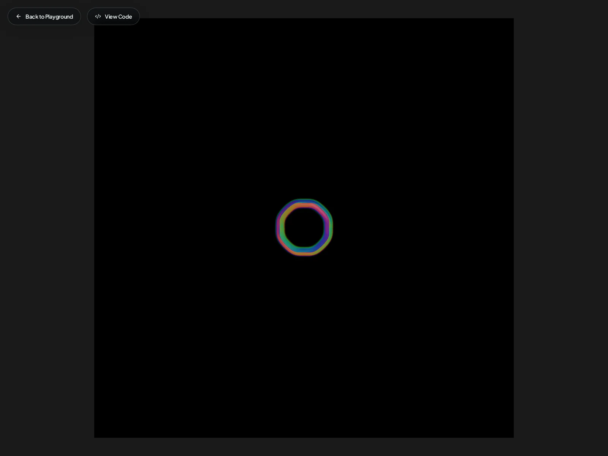

Organic Patterns
Reaction-diffusion, Turing patterns, and biological growth processes rendered as real-time GLSL shaders. Nature's algorithms made visible.

Coral Morphogenesis
Gray-Scott reaction-diffusion simulation producing labyrinthine coral patterns with thin-film interference coloration and iridescent surface lighting.